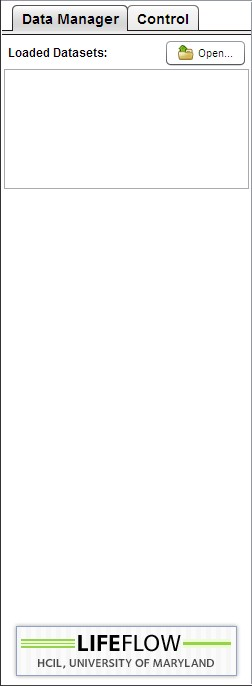
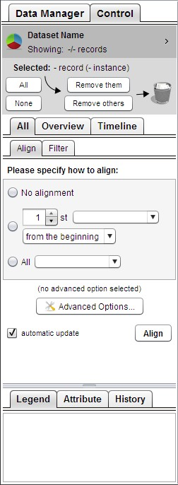

The LifeFlow user interface has three panels:
Figure 2.1: The overview of LifeFlow panels.
In LifeFlow, the detailed data is displayed in the Timeline Panel. LifeFlow transforms this detailed data for display in the Overview Panel in two steps: aggregation and visualization.
First, the data records are aggregated into a tree-based data structure called a tree of sequences, based on the prefixes of their event sequences. Once the tree of sequences is created, it can be visualized in the LifeFlow Overview Panel.
Each node of the tree is represented with a color-coded event bar, matching the color of the event type. The height of a bar is determined by the number of records in that node proportionally to the total number of records. The horizontal gap between a bar and its parent is proportional to the mean time between the two events.
Figure 2.2: The design of LifeFlow.
For example, a record that contains event sequence Arrival -> ER -> ICU and a record that contains event sequence Arrival -> ER -> Floor, share the same prefix sequence Arrival -> ER. The records are grouped event-by-event from the beginning of the event sequences to the end. In Figure 2.2, all records start with the blue event so they are grouped together (indicated by dashed rectangle) in to a blue tree node. Then, they all also have the pink event, so they are still grouped together into a pink node. In the next step, two of them have red events while the other two have green events so they are split into red and green nodes. Then do the same for the rest of the event sequences.
For more details, visit the project webpage at: http://www.cs.umd.edu/hcil/lifeflow
In LifeFlow, the detailed data is displayed in the Timeline Panel. As in LifeLines2, raw data are displayed on a horizontal timeline, with colored triangles representing events. Also as in LifeLines2, each row represents a record. Note that not all functionalities of LifeLines2 are included. The summary feature of LifeLines2, for example. However, some of the missing features of LifeLines2 can be achieved using Overview Panel. For example, the summary feature, which allows the users to select records with certain elapsed time between two events, can be performed by selecting from distribution using Overview Panel. LifeLines2 uses the Align, Rank, Filter framework to facilitate visual analysis.
For more details, visit the LifeLines2 project webpage at: http://www.cs.umd.edu/hcil/lifelines2
The Control Panel consists of two tabs: Data Manager and Control.
In the following chapter, we will describe how to use the Data Manager Tab to load your data into LifeFlow. The Control Tab, which you will spend more time with, will be described in the rest of the manual.
|

Figure 2.3: Data Manager tab. |

Figure 2.4: Control tab. |